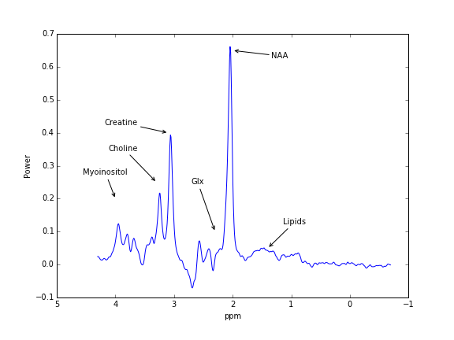

<html>
</html>

<!DOCTYPE html PUBLIC "-//W3C//DTD XHTML 1.0 Transitional//EN"
  "http://www.w3.org/TR/xhtml1/DTD/xhtml1-transitional.dtd">


<html xmlns="http://www.w3.org/1999/xhtml">
  <head>
    <meta http-equiv="Content-Type" content="text/html; charset=utf-8" />
    
    <title>The Stanford CNI MRS library (SMAL) Documentation &mdash; MRS 0.1 documentation</title>
    
    <link rel="stylesheet" href="_static/sphinxdoc.css" type="text/css" />
    <link rel="stylesheet" href="_static/pygments.css" type="text/css" />
    
    <script type="text/javascript">
      var DOCUMENTATION_OPTIONS = {
        URL_ROOT:    './',
        VERSION:     '0.1',
        COLLAPSE_INDEX: false,
        FILE_SUFFIX: '.html',
        HAS_SOURCE:  true
      };
    </script>
    <script type="text/javascript" src="_static/jquery.js"></script>
    <script type="text/javascript" src="_static/underscore.js"></script>
    <script type="text/javascript" src="_static/doctools.js"></script>
    <link rel="top" title="MRS 0.1 documentation" href="#" />
    <link rel="next" title="Getting started" href="getting_started.html" /> 
  </head>
  <body>
    <div class="related">
      <h3>Navigation</h3>
      <ul>
        <li class="right" style="margin-right: 10px">
          <a href="genindex.html" title="General Index"
             accesskey="I">index</a></li>
        <li class="right" >
          <a href="py-modindex.html" title="Python Module Index"
             >modules</a> |</li>
        <li class="right" >
          <a href="getting_started.html" title="Getting started"
             accesskey="N">next</a> |</li>
        <li><a href="#">MRS 0.1 documentation</a> &raquo;</li> 
      </ul>
    </div>
      <div class="sphinxsidebar">
        <div class="sphinxsidebarwrapper">
  <h4>Next topic</h4>
  <p class="topless"><a href="getting_started.html"
                        title="next chapter">Getting started</a></p>
  <h3>This Page</h3>
  <ul class="this-page-menu">
    <li><a href="_sources/index.txt"
           rel="nofollow">Show Source</a></li>
  </ul>
<div id="searchbox" style="display: none">
  <h3>Quick search</h3>
    <form class="search" action="search.html" method="get">
      <input type="text" name="q" />
      <input type="submit" value="Go" />
      <input type="hidden" name="check_keywords" value="yes" />
      <input type="hidden" name="area" value="default" />
    </form>
    <p class="searchtip" style="font-size: 90%">
    Enter search terms or a module, class or function name.
    </p>
</div>
<script type="text/javascript">$('#searchbox').show(0);</script>
        </div>
      </div>

    <div class="document">
      <div class="documentwrapper">
        <div class="bodywrapper">
          <div class="body">
            
  <div class="section" id="the-stanford-cni-mrs-library-smal-documentation">
<h1>The Stanford CNI MRS library (SMAL) Documentation<a class="headerlink" href="#the-stanford-cni-mrs-library-smal-documentation" title="Permalink to this headline">¶</a></h1>
<p>This library provides algorithms and methods to read and analyze data from
Magnetic Resonance Spectroscopy (MRS) experiments. It provides an API for
fitting models of the spectral line-widths of several different molecular
species, and quantify their relative abundance in human brain tissue.</p>

<p>&#8220;GABA 3D ball&#8221; by Jynto (talk) - Own workThis chemical image was created with Discovery Studio Visualizer.. Licensed under Creative Commons Zero, Public Domain Dedication via Wikimedia Commons - <a class="reference external" href="http://commons.wikimedia.org/wiki/File:GABA_3D_ball.png#mediaviewer/File:GABA_3D_ball.png">http://commons.wikimedia.org/wiki/File:GABA_3D_ball.png#mediaviewer/File:GABA_3D_ball.png</a></p>
<div class="toctree-wrapper compound">
<ul>
<li class="toctree-l1"><a class="reference internal" href="getting_started.html">Getting started</a></li>
<li class="toctree-l1"><a class="reference internal" href="reference/index.html">API Reference</a></li>
</ul>
</div>
<ul class="simple">
<li><a class="reference internal" href="genindex.html"><em>Index</em></a></li>
</ul>
</div>


          </div>
        </div>
      </div>
      <div class="clearer"></div>
    </div>
    <div class="related">
      <h3>Navigation</h3>
      <ul>
        <li class="right" style="margin-right: 10px">
          <a href="genindex.html" title="General Index"
             >index</a></li>
        <li class="right" >
          <a href="py-modindex.html" title="Python Module Index"
             >modules</a> |</li>
        <li class="right" >
          <a href="getting_started.html" title="Getting started"
             >next</a> |</li>
        <li><a href="#">MRS 0.1 documentation</a> &raquo;</li> 
      </ul>
    </div>
    <div class="footer">
        &copy; Copyright 2014, Ariel Rokem, Grace Tang, Stanford CNI.
      Created using <a href="http://sphinx-doc.org/">Sphinx</a> 1.2.2.
    </div>
  </body>
</html>